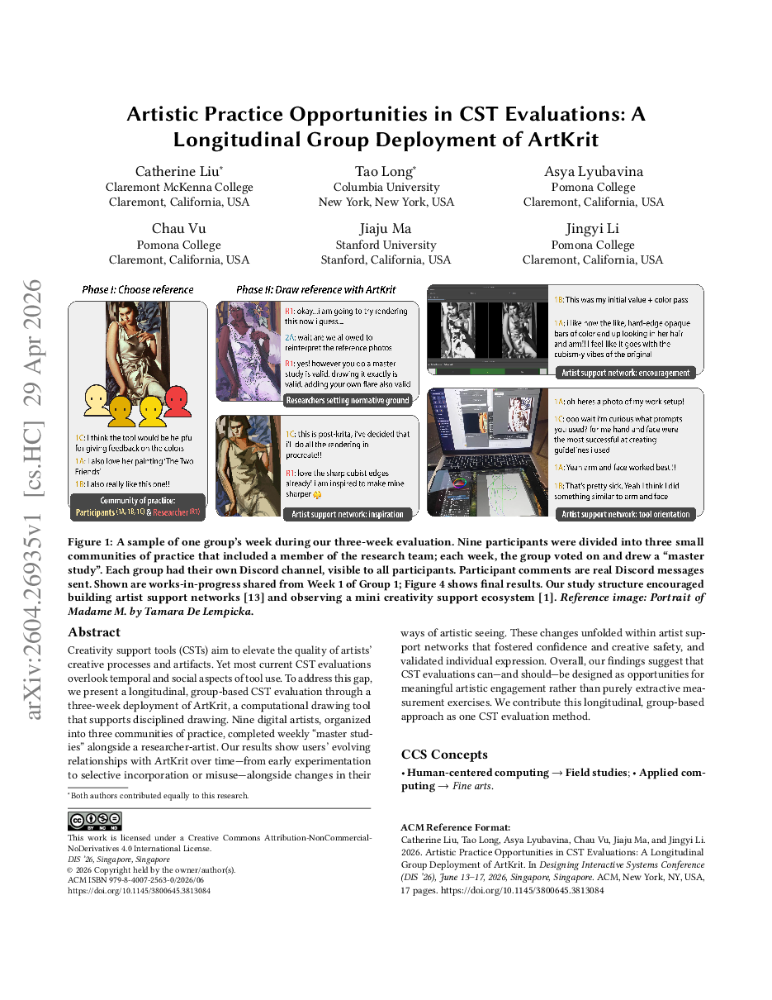
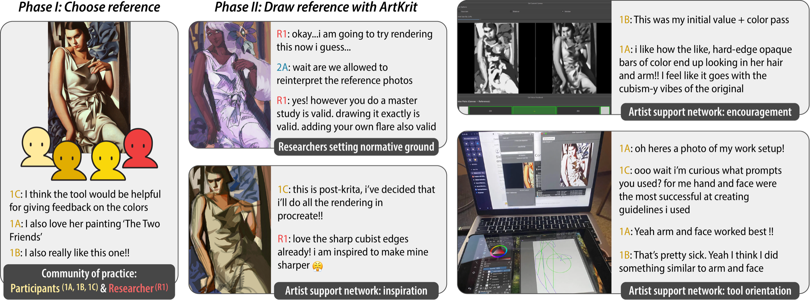
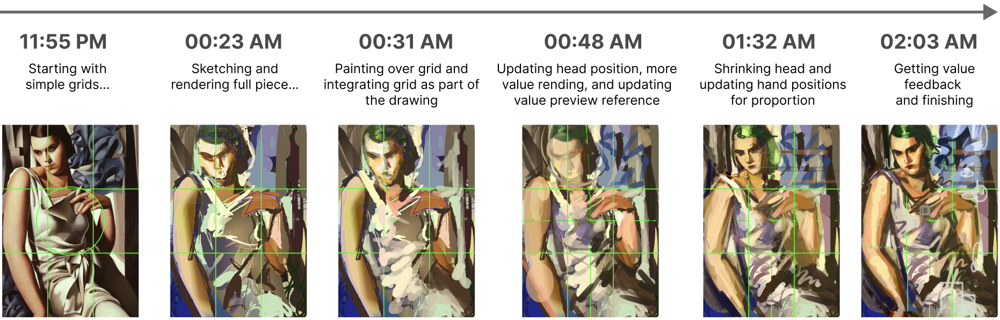
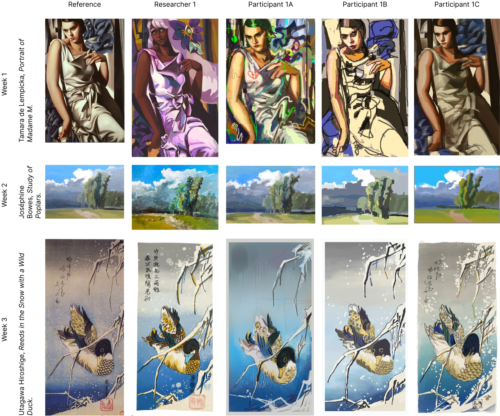
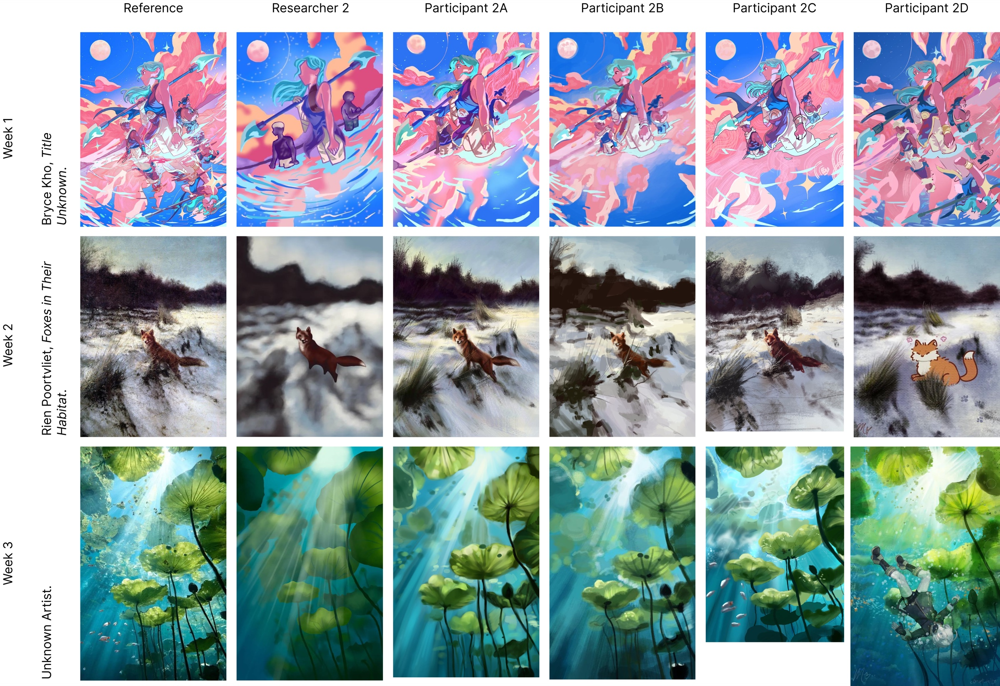
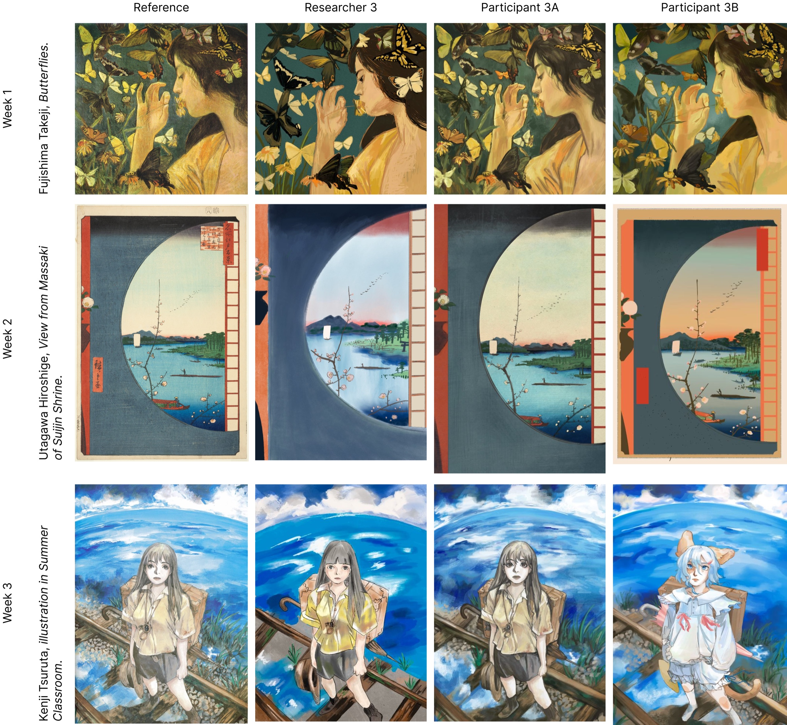
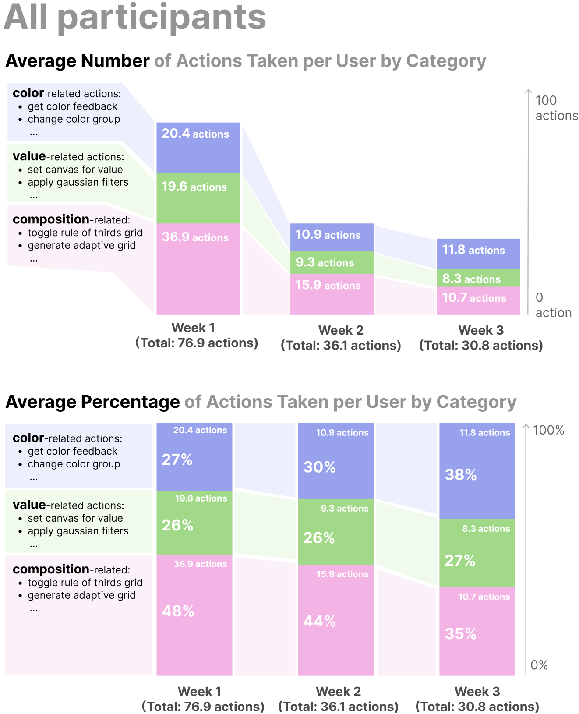
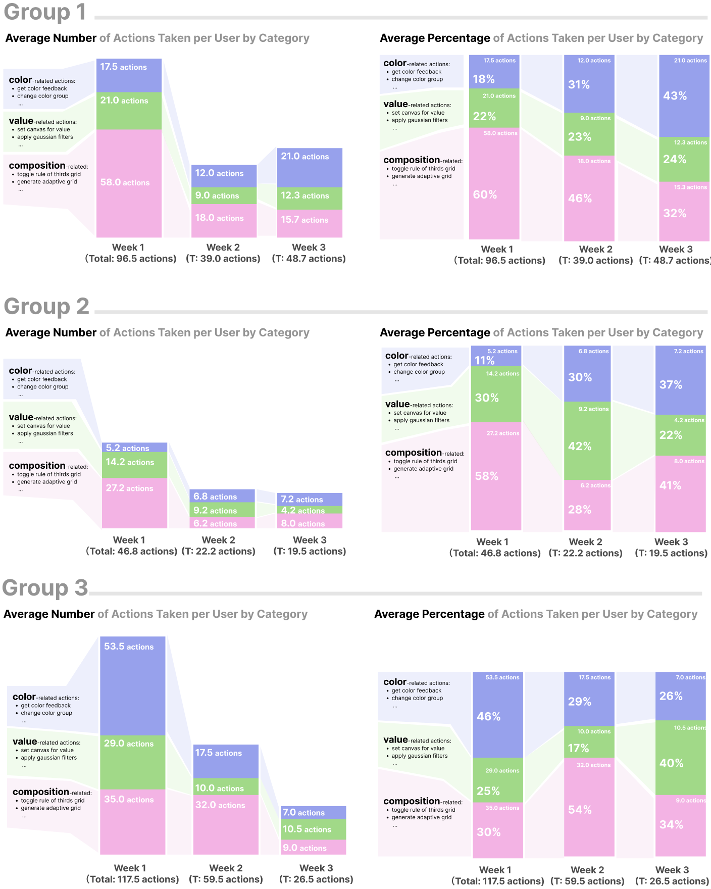

Artistic Practice Opportunities in CST Evaluations:A Longitudinal Group Deployment of ArtKrit
DIS 2026 · Honorable Mention (Top 5%)

Most creativity support tool evaluations overlook time and community.
— We deployed ArtKrit for three weeks with artists embedded in small support networks.
1/ Beyond One-Off CST Evaluations
Creativity support tools (CSTs) aim to elevate artists' creative processes and artifacts, yet most evaluations overlook temporal and social aspects of tool use. We ran a longitudinal, group-based evaluation of ArtKrit, a computational drawing tool that supports disciplined drawing.

Summary
Framing the evaluation as an opportunity for meaningful artistic engagement, rather than a purely extractive measurement exercise, shaped both what participants did and what we learned.
2/ Three Weeks with ArtKrit: How Use Evolved
Participants' relationships with ArtKrit changed over time, from early experimentation to selective incorporation or even misuse, alongside changes in how they saw their subjects.





Summary
A tool's value shows up over weeks, not minutes. Expect an exploration phase, plan for selective adoption, and treat creative misuse as a signal about artistic practice.
3/ Artist Support Networks & Implications
These changes unfolded inside artist support networks that fostered confidence and creative safety and validated individual expression.

Takeaways
- CST evaluations can, and should, be designed as opportunities for meaningful artistic engagement rather than purely extractive measurement.
- Design for a familiarization phase, then for selective and creative use.
- A longitudinal, group-based approach is one CST evaluation method that surfaces social and temporal effects that single sessions miss.
BibTeX
If this work is useful to you, here is a citation you can copy.
@inproceedings{liu2026artistic,
author = {Liu, Catherine and Long, Tao and Lyubavina, Asya and Vu, Chau and Ma, Jiaju and Li, Jingyi},
title = {Artistic Practice Opportunities in CST Evaluations: A Longitudinal Group Deployment of ArtKrit},
year = {2026},
isbn = {9798400725630},
publisher = {Association for Computing Machinery},
address = {New York, NY, USA},
url = {https://doi.org/10.1145/3800645.3813084},
doi = {10.1145/3800645.3813084},
booktitle = {Proceedings of the 2026 Designing Interactive Systems Conference},
pages = {2054–2070},
numpages = {17},
location = {Singapore, Singapore},
series = {DIS '26}
}